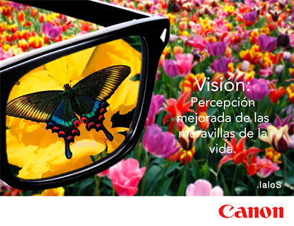
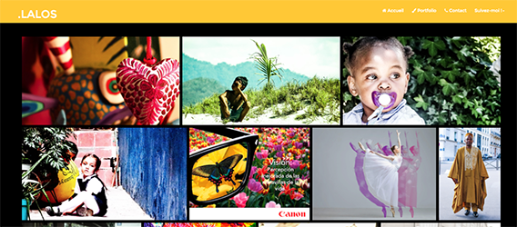

So how this digital world looks like? Well, it’s pretty kind to us.
Guess what? I discovered 2 years ago that I’m a wonderwoman.
Well, I admit that I’m not really credible in this picture ! But yes, I discovered that I could do almost anything I wanted thanks to digital.
First, I’ve decided to fulfil my first dream : being a digital agency director (even for one day)! I’ve always wanted to create my own print ads. For that, I found a pretty quick solution : to learn graphic design. Thus, I joined a 6-month course during my academic exchange in Mexico to learn different techniques and how to use the famous Adobe suite. Loot at the result : pretty nice, isn’t it?

Thus, I’ve decided to go a bit deeper, and to accomplish my second dream: to build my own online platform where I could publish all my creative assets (photos, graphics visuals) Once again, the solution was pretty easy to find thanks to what I consider as the « black gold » of the web : online tutorials. I had the choice between several ones. I’ve decided to join an 1-month online track to learn coding. A month later, I was able to publish my own portfolio : lalo8.github.io/Lalo

At the same time, during my professional experiences, I had the opportunity to develop a lot of technical skills specific to web such as data analysis, advertising campaign management, digital project management. Thus today, I’m a photographer, a designer, a junior digital media manager.
Do you understand now? I realized something so precious : thanks to the Web, I didn’t have to choose between my creative hobbies and my attraction to technical projects. In other words, I didn’t have to choose between my creativity and the professional skills I’d want to develop such as deep-dive data analysis. Thanks to web, you don’t have to choose what you have to do for financial needs anymore and giving up on your passions. You don’t have to suffer all your life along, the educational choices you’ve made when you were so young :“I‘ve made law studies, so I’ll be an attorney all my life” isn’t a true fact anymore. Now is more about “I decided to make law studies in order to become attorner first.” Now, I want to come back to my first passion: archeology. I will then join some online courses in order to acquire some basis on dinosaurs’ anatomy.” In fact, you can develop all the skills, knowledge you want without having to give up on other ones: You can be and live all the different faces of your personality without concession.
Such an easy access to the information, such an awareness of all our capabilities, couldn’t happen without an impact on the economic world. Entrepreneuship seems to be the answer to all these changes.
Entrepreneurship is the gift !
Look at Mari Smith, the Facebook marketing expert : she runs a consulting firm, gives sometimes lessons to businesses and brands. She began by being a travel blogger which was one of her passions. Thus, not only she didn’t give up on her passion but also this is what paved the way to the success she is currently experienced. Now she has her « tailor-made » job as a mix of her skills : being CEO of a consulting firm, a Facebook marketing expert, an influencer and a blogger.
Entrepreneurship appears more an more as an alternative to employment.
Who’s better than Baby Boomers who’ve spent their entire life experiencing employment to prove it?
In fact, there is this growing trend of « Boomers entrepreneurs »: according to Martin Swilling¹, a Forbes contributor, during every one of the last 15 years, Baby Boomers between 55 and 64 years old have had a higher entrepreneurial activity than generation Y. According to a Gallup study², more than 80% launch companies as a lifestyle choice : 56% want to continue their career at being independent and pursuing their passions. Moreover, the major part of those surveyed, see in this alternative, what they will earn more than what it will cost : according to Martin’s article, most of baby boomers don’t hesitate to spend their savings in order to build their company.
Finally it’s interesting to note that thanks to digital technologies, entrepreneurship appear every day easier to access at low cost³ : in fact, for web companies, at the beginning there is no infrastructure to build. The only thing you need at first are the skills to build the solution or even pass by an open source CMS such as Wix to build your e-commerce website.
What if we all wake up the wonderwoman or superman inside us? :)
Sources:
¹Chun, Janean 2012Boomers Who Start Businesses: The Next Great Generation Of Entrepreneurs. Huffington Post, January 9. http://www.huffingtonpost.com/2012/01/09/boomers-who-start-businesses_n_1185394.html, accessed December 3, 2016.
²Inc, Gallup N.d.A Very Fast-Growing Group of Entrepreneurs: People Over 50. Gallup.com. http://www.gallup.com/businessjournal/181352/fast-growing-group-entrepreneurs-people.aspx, accessed December 3, 2016.
³Zwilling, Martin N.d.A New Era For Entrepreneurs And Startups Has Begun. Forbes. http://www.forbes.com/sites/martinzwilling/2013/12/25/a-new-era-for-entrepreneurs-and-startups-has-begun/